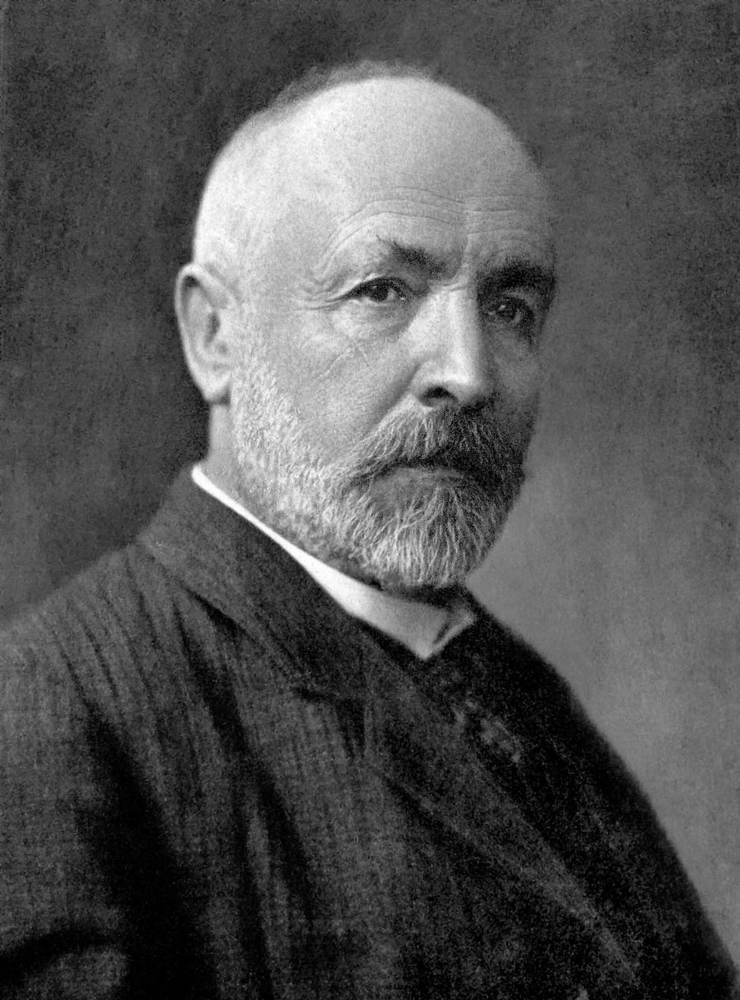

Week 1, Lecture 1: Sets, Functions, and Peano's Foundations
← Week 1 Overview Hub
Finding Your Footing: Welcome to Pure Mathematics
If you are joining this unit from secondary school calculus or applied introductory algebra, your first encounter with real analysis can feel slightly disorienting. Up to this point, mathematics has likely centered around calculating answers—finding an unknown $x$, sketching a quadratic curve, or evaluating an integral. Here, we step behind the curtain to examine the structural machinery that makes those techniques work in the first place.
At first glance, some of what we do in this lecture might even seem strangely pedantic. You might reasonably wonder: "Why do we need five abstract axioms just to define counting on our fingers? Why spend lecture time proving properties of numbers we have used without issue since primary school?"
The reality is that intuitive arithmetic, while dependable for everyday calculation, breaks down the moment we push into infinite collections, limits, and continuous curves. Much like writing reliable software requires unambiguous syntax before compiling complex algorithms, pure analysis demands an airtight grammar. Once we establish precisely what a set is, how mappings function, and how the natural numbers lock together like an unbroken chain of dominoes, we build a bedrock foundation that will never give way beneath us.
Do not feel discouraged if the symbolic notation seems dense on your first pass. Mathematical symbols are not barriers designed to keep you out; they are simply concise shorthand for very straightforward ideas. Take your time, lean into the analogies, and give yourself permission to explore the concepts rather than rushing to compute a final number.
📌 Lecture 1 Topics
1. Sets and Infinite Cardinality
📖 Notation Reference: Sets & Elements
A set is simply an unordered collection of distinct elements. The order in which elements are listed does not matter, and repeating an element changes nothing:
The number of elements in a set $A$ is called its cardinality, denoted $|A|$. The unique set containing zero elements is the empty set, written $\emptyset = \{\}$, with $|\emptyset| = 0$.
2. Set Operations and Products
📖 Notation Reference: Set Operations
When you first encounter set operations written in formal logic, they can look surprisingly intimidating. However, the underlying concepts are very natural. In pure analysis, our goal isn't to make simple ideas complicated—it is to give our intuition an unambiguous, watertight language so that our proofs hold up even in tricky infinite settings.
To see how these operations work in practice, we will use two concrete reference sets throughout this section:
2.1 Union ($A \cup B$)
Key Concept: Inclusive "OR" ($\lor$)The union combines everything from both sets into a single collection:
A Subtle Distinction: In everyday English, "or" often implies an exclusive choice (e.g., pass or fail). In mathematics, disjunction ($\lor$) is always inclusive. An element belongs to $A \cup B$ if it is in $A$, in $B$, or in both. Because sets only care about presence, shared elements like $2$ and $3$ appear just once.
Result: $A \cup B = \{1, 2, 3, 4, 5\}$.
2.2 Intersection ($A \cap B$)
Key Concept: Simultaneous "AND" ($\land$)The intersection isolates elements that satisfy both membership criteria at the same time:
Think of this as the common ground shared by both sets. If two sets have no overlap whatsoever ($A \cap B = \emptyset$), we say they are disjoint.
Result: $A \cap B = \{2, 3\}$.
2.3 Set Difference ($A \setminus B$)
Key Concept: Order MattersThe set difference $A \setminus B$ (read as "A without B" or "A minus B") starts with $A$ and removes any element that also appears in $B$:
Notice that unlike union or intersection, this operation is non-commutative:
- $A \setminus B = \{1\}$ (elements in $A$ excluding any in $B$)
- $B \setminus A = \{4, 5\}$ (elements in $B$ excluding any in $A$)
2.4 Cartesian Product ($A \times B$)
Key Concept: Constructing Higher DimensionsRather than combining individual elements, the Cartesian product forms all possible ordered pairs $(a, b)$ where the first entry comes from $A$ and the second from $B$:
Why "Product"? The total number of pairs is simply the product of their sizes: $|A \times B| = |A| \cdot |B|$. Here, $3 \times 4 = 12$ distinct pairs are formed.
Connecting to Continuous Math: This exact mechanism builds multi-dimensional spaces. When you take the real number line $\mathbb{R}$ and form $\mathbb{R} \times \mathbb{R}$, you get $\mathbb{R}^2$—the familiar continuous Cartesian plane.
🏛️ Why is it called a "Cartesian" Product? (René Descartes)
(1596–1650)
René Descartes was a French philosopher, scientist, and mathematician whose Latinized name, Renatus Cartesius, gives us the term Cartesian.
Why do ordered pairs bear his name? Prior to Descartes, algebra and geometry were studied as completely disconnected subjects. In his 1637 work La Géométrie, Descartes introduced the revolutionary idea of specifying the position of a point using an ordered pair of numbers $(x, y)$ measured along perpendicular axes.
By constructing the Cartesian product of the real line with itself ($\mathbb{R} \times \mathbb{R} = \mathbb{R}^2$), geometric curves could be analyzed through algebraic equations, and algebraic formulas could be visualized geometrically. This conceptual bridge between numbers and geometry is the ground upon which all of calculus and modern analysis stands.
3. Functions and Mappings
📖 Notation Reference: Functions & Composition
In high school and introductory calculus, functions are usually introduced as algebraic recipes: you write $f(x) = x^2$, plug in a number, and compute an answer. In real analysis, we broaden our perspective. A function (or mapping) is a structural link between two sets that assigns to every member of the first set exactly one member of the second.
This shift matters because throughout this course, sequences, limits, derivatives, and integrals will all be defined as functions. Gaining confidence with how domain, codomain, and invertibility interact will keep you grounded when the inputs become infinite lists or functions themselves.
3.1 The Anatomy of a Mapping: Domain, Codomain, and Range
Key Distinction: Codomain vs. RangeIt is completely normal if the distinction between where a function could go (its codomain) and where it actually lands (its range) feels unfamiliar at first. Previously, domain and range were mostly an afterthought—something you checked to avoid dividing by zero. In pure analysis, we declare them upfront: a function cannot exist without an explicit starting set and target set. Taking a moment to distinguish between the available target space and the elements actually hit will save you considerable confusion later.
When declaring a function $f: X \to Y$, three distinct sets are involved:
- Domain ($X$): The source set of all valid inputs. Every single $x \in X$ must have an assigned output.
- Codomain ($Y$): The target universe where outputs are allowed to land.
- Range ($f(X)$): The subset of $Y$ consisting of values actually hit by the mapping: $f(X) = \{f(x) \mid x \in X\} \subseteq Y$.
The codomain is all of $\mathbb{R}$, but negative numbers are never produced. The actual range is $[0, \infty)$.
3.2 Structural Properties: Injective, Surjective, and Bijective
Classifying MappingsTerms like injective, surjective, and bijective can initially sound like heavy academic jargon, but they simply represent three practical diagnostic checks on how arrows travel between sets: Do distinct inputs ever collide at the same output? Does the mapping reach every corner of the codomain? and Can the relationship be paired off one-to-one? Approaching these definitions as structural quality checks makes verifying them straightforward and methodical.
Injective (1-to-1): "No Collisions"
Distinct inputs always yield distinct outputs:
Contrapositive proof form: $f(a) = f(b) \implies a = b$. No two arrows ever merge into the same destination point.
Surjective (Onto): "No Stranded Targets"
Every element in the codomain is hit by at least one arrow:
In other words, the range completely covers the codomain: $f(X) = Y$. No target is left unhit.
Bijective: "The Perfect Pairing"
A mapping that is both injective and surjective:
Establishes a 1-to-1 correspondence. Every element in $X$ matches with exactly one unique element in $Y$, with none left over.
VISUAL COMPARISON: Mapping Structures
3.3 Composition and Invertibility
Pipelines & Reverse PathsChaining functions together and reversing their actions is where set theory turns into practical analytical machinery. If tracking intermediate domains or reading composite notation from right to left feels slightly unnatural at first, take heart—it trips up almost every beginner. Visualising composition as a sequential pipeline and inversion as an unbroken round trip makes it easy to see exactly why bijectivity is required to undo a function without ambiguity.
1. Composition ($g \circ f$): Chaining Actions in Series
Composition connects two functions like links in a pipeline: the output of the first function feeds directly as the input into the second. If $f: X \to Y$ and $g: Y \to Z$, their composite $g \circ f: X \to Z$ creates a single direct leap from $X$ to $Z$:
Read from right to left: Although $g$ is written on the left, $f$ acts on $x$ first. Think of $(g \circ f)(x)$ as saying: "evaluate $f(x)$ first, then pass that output into $g$."
VISUALIZATION: The Composition Pipeline ($X \xrightarrow{f} Y \xrightarrow{g} Z$)
2. Inverses ($f^{-1}$): The "Undo" Operation
An inverse function $f^{-1}: Y \to X$ simply undoes what $f$ did. Composing a function with its inverse brings you right back to your starting point:
VISUALIZATION: The Inversion Round Trip ($X \underset{f^{-1}}{\overset{f}{\rightleftharpoons}} Y$)
Why must a function be bijective to have an inverse? It comes down to what happens when you try to walk the arrows backward:
- Must be Injective (No Ambiguity): If two inputs merged to the same output, walking backward leaves you at a fork with no unique answer for where you came from.
- Must be Surjective (No Dead Ends): If an element in $Y$ was never hit by an arrow, the reverse path is undefined for that point.
💡 Infinity Comes in Different Sizes!
The standard number systems satisfy the subset inclusion chain:
Remarkably, their infinite cardinalities do not increase at every step! The counting numbers ($\mathbb{N}$), integers ($\mathbb{Z}$), and rational fractions ($\mathbb{Q}$) all share the exact same countable size of infinity. However, the continuous real line ($\mathbb{R}$) is strictly larger:
🏛️ Why Bijections Matter: Measuring the Infinite (Georg Cantor)

Georg Cantor(1845–1918)
Georg Cantor was a German mathematician and the principal architect of modern set theory. During the 1870s, his investigations into Fourier series led him to ask fundamental questions about the nature of infinite collections.
The Power of Bijections: In Section 3.2, we defined a bijection as a one-to-one and onto mapping. Cantor realized that bijections provided an exact, unambiguous way to measure the size (or cardinality) of sets without counting them element-by-element: two sets have the exact same size if and only if there exists a bijection between them.
Applying this insight to infinite sets yielded a conclusion that unsettled 19th-century mathematics: infinity is not monolithic. Cantor proved that while natural numbers $\mathbb{N}$ and rational numbers $\mathbb{Q}$ share the same cardinality, the continuum of real numbers $\mathbb{R}$ is strictly larger—no bijection between $\mathbb{N}$ and $\mathbb{R}$ can ever exist. Though fiercely opposed by contemporaries like Leopold Kronecker, his work became the foundation of modern analysis, prompting David Hilbert to declare: "No one shall expel us from the paradise that Cantor has created."
The Shadow of Paradox: However, allowing any arbitrary property to define a set ("naive set theory") soon revealed cracks in paradise. In 1901, philosopher and logician Bertrand Russell formulated Russell's Paradox — the set of all sets that don't contain themselves — by considering the set $R$ of all such sets:
To see why this creates a crisis, ask a simple question: Does $R$ contain itself?
• If yes, it breaks its own rule and shouldn't be in $R$.
• If no, its definition forces it to be included in $R$, meaning it does contain itself!
Either assumption blows up in our face, leading directly to the formal contradiction:
This stunning realization proved that set theory needed rigorous axiomatic guardrails—inspiring the modern Zermelo-Fraenkel foundations that keep our mathematical house standing today.
4. Peano's Axioms for Natural Numbers
Building Numbers from Scratch: Peano's Axioms
Have you ever wondered what the number "1" actually is? In higher mathematics, we don't take counting for granted. We build the natural numbers ($\mathbb{N}$) using a blueprint called Peano's Axioms. Think of this as creating an infinite chain of dominoes using just a starting point and a single rule for taking the "next step" (the successor function, $S(n)$):
- The Starting Line: $0 \in \mathbb{N}$. We have to start somewhere! This gives our number system a root.
- The Next Step: Every number $n$ has exactly one valid next step, called its successor $S(n)$. (Intuitively, $S(n) = n + 1$).
- No Merging Paths (Injectivity): If two numbers take a step and land in the exact same spot, they must have started in the exact same spot. Two different numbers can never share the same successor.
- No Loops (The Root Property): $0$ is not the successor of any number. You can never take a step forward and end up back at zero. This prevents our number line from turning into a circular clock.
- No Ghost Chains (Mathematical Induction): The only numbers that exist are the ones you can reach by starting at $0$ and stepping forward. There are no disconnected, floating "ghost" numbers. If a property is true for $0$, and taking a step always keeps it true, then it is true for every natural number.
📜 Axiom Set: Peano's Postulates
From these five simple rules, we construct all arithmetic recursively:
- Addition ($+$): $n + 0 = n$, and $n + S(m) = S(n + m)$.
- Multiplication ($\cdot$): $n \cdot 0 = 0$, and $n \cdot S(m) = (n \cdot m) + n$.
🏛️ Who was Giuseppe Peano?
(1858–1932)
Giuseppe Peano was an Italian mathematician and logician at the University of Turin whose influence touches almost every page of modern mathematics. If you have ever written $\in$ for set membership, $\cup$ for union, or $\cap$ for intersection, you are using notation Peano personally invented to make mathematical arguments completely unambiguous.
Why did he formulate these axioms? In the late nineteenth century, mathematics was undergoing a profound foundational crisis. For centuries, calculus and arithmetic had relied heavily on geometric sketches, physical intuition, and vague notions of "infinitesimals." But intuition began leading mathematicians into contradictions—Peano himself famously shocked the mathematical world by discovering a continuous curve that completely fills a two-dimensional square.
Realizing that geometric intuition could no longer be trusted as proof, Peano set out to reconstruct arithmetic from the ground up. In his 1889 treatise Arithmetices principia, nova methodo exposita, he demonstrated that the entire infinite system of counting numbers, addition, and multiplication could be derived from just five simple, airtight logical rules.
5. The Grand Arc: Building the Mathematical Lexicon
Looking back across this opening lecture, what might have felt like a tour of dry abstractions—grouping objects into brackets, pairing coordinates, categorizing arrows, and setting rules for counting—is actually the construction of the entire alphabet of pure analysis. Every advanced theorem in calculus relies on this exact structural blueprint.
Here is how each piece assembles the engine of modern analysis:
- The Containers (Sets): Before we can analyze numbers, sequences, or functions, we need an unambiguous way to define collections. Sets give us clean boundaries without worrying about order or duplication.
- The Geometry Builder (Cartesian Products): Taking pairs of elements from two sets via $A \times B$ is not merely bookkeeping—it is the algebraic mechanism that builds coordinate geometry ($\mathbb{R}^2$) and allows us to visualize equations as geometric curves.
- The Dynamic Connectors (Functions & Mappings): Moving beyond high-school formulas, functions become rigorous contracts between domains and codomains. Classifying them as injective, surjective, or bijective tells us whether information is preserved, whether spaces are fully covered, and whether processes can be safely undone.
- The Metric of the Infinite (Cantor's Bijections): By pairing elements via bijections, we discover that infinity has distinct sizes. Counting numbers and fractions belong to one tier, while the continuous real line occupies a strictly higher realm of cardinality.
- The Counting Ladder (Peano's Axioms): Rather than taking counting for granted, Peano gives us an airtight chain starting at $0$ with no branching, no loops, and no disconnected ghost chains. This gives birth to mathematical induction—our primary tool for proving statements across all of infinity.
Where We Go From Here
Notice what we have constructed so far: a rigid, discrete ladder of natural counting numbers $\mathbb{N}$. But discrete steps leave giant, empty chasms between whole numbers. We cannot do calculus, measure smooth motion, or track continuous rates of change on a ladder where you can only stand on integer rungs.
In Lecture 2, we take the crucial leap from discrete stepping to the continuous number line. We will fill the gaps with fractions ($\mathbb{Q}$), confront the shocking geometric discovery that fractions still leave infinite pinprick holes ($\sqrt{2}$), measure distance with absolute value, and finally lock in the complete, solid continuum of the real numbers ($\mathbb{R}$). The stage is now set.